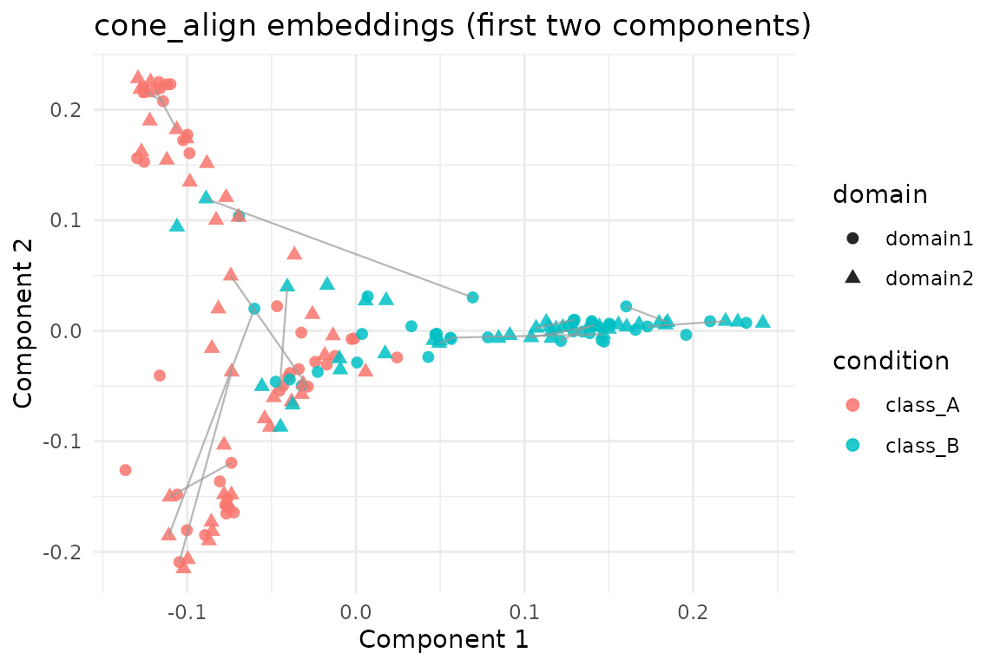

Overview
cone_align() aligns two graph domains by alternating
between spectral embeddings, orthogonal Procrustes rotations, and linear
assignment. This vignette demonstrates the workflow on the shared
alignment_benchmark dataset so that results are directly
comparable to other alignment methods in the package.
Benchmark Pair
We use the first two domains from alignment_benchmark.
Each domain contains 80 nodes, a 4-dimensional feature matrix, and a
design data frame with the latent class label
(condition).
alignment_benchmark <- manifoldalign::alignment_benchmark
pair_domains <- alignment_benchmark$domains[1:2]
pair_multidesign <- lapply(pair_domains, function(dom) {
multidesign::multidesign(dom$x, dom$design)
})
pair_names <- names(pair_multidesign)
node_counts <- vapply(pair_multidesign, function(dom) nrow(dom$x), integer(1))
hd_pair <- multidesign::hyperdesign(pair_multidesign)Running cone_align
cone_fit <- cone_align(
hd_pair,
ncomp = 8,
sigma = 0.9,
lambda = 0.05,
solver = "linear",
max_iter = 40,
tol = 1e-3
)
str(cone_fit, max.level = 1)
#> List of 7
#> $ v : num [1:8, 1:8] -5.72 -8.56 -7.88 -5.65 -5.88 ...
#> $ s : num [1:160, 1:8] -0.1024 -0.0999 -0.0762 -0.0323 -0.1258 ...
#> $ sdev : num [1:8] 0.1059 0.1034 0.0919 0.0887 0.0956 ...
#> $ preproc : NULL
#> $ block_indices:List of 2
#> $ assignment : int [1:80] 75 1 31 4 21 36 77 8 2 10 ...
#> $ rotation :List of 2
#> - attr(*, "class")= chr [1:2] "cone_align" "multiblock_biprojector"Assignment Quality
cone_align() returns a permutation vector
(assignment) that maps nodes in the second domain to nodes
in the first (reference) domain. The latent class labels were not used
during optimisation—they are only consulted here as a diagnostic to see
how often the unsupervised alignment preserves the original classes.
assignment <- cone_fit$assignment
ref_labels <- pair_multidesign[[1]]$design$condition
cmp_labels <- pair_multidesign[[2]]$design$condition
condition_accuracy <- mean(ref_labels[assignment] == cmp_labels)
identity_fraction <- mean(assignment == seq_along(assignment))
tibble(
metric = c("Class agreement", "Exact identity"),
value = c(condition_accuracy, identity_fraction)
)
#> # A tibble: 2 × 2
#> metric value
#> <chr> <dbl>
#> 1 Class agreement 0.875
#> 2 Exact identity 0.262Visualising the Aligned Embeddings
The aligned embeddings (cone_fit$s) stack the two
domains. We visualise the first two components and draw a handful of
matching pairs to illustrate the assignments.
# Note: class labels are only used for visual diagnostics below; `cone_align`
# operates in a completely unsupervised manner and does not see `condition`.
score_tbl <- as_tibble(as.matrix(cone_fit$s), .name_repair = "minimal")
colnames(score_tbl) <- paste0("comp", seq_len(ncol(score_tbl)))
scores <- score_tbl %>%
mutate(
domain = rep(pair_names, times = node_counts),
condition = rep(ref_labels, length(pair_names))
)
# pick 15 nodes to visualise correspondences
set.seed(123)
subset_idx <- sample(seq_len(node_counts[1]), size = 15)
segment_df <- tibble(
x = scores$comp1[subset_idx],
y = scores$comp2[subset_idx],
xend = scores$comp1[node_counts[1] + assignment[subset_idx]],
yend = scores$comp2[node_counts[1] + assignment[subset_idx]]
)
ggplot(scores, aes(x = comp1, y = comp2, colour = condition, shape = domain)) +
geom_point(size = 2.1, alpha = 0.85) +
geom_segment(
data = segment_df,
aes(x = x, y = y, xend = xend, yend = yend),
inherit.aes = FALSE,
colour = "grey60",
linewidth = 0.4,
alpha = 0.7
) +
labs(title = "cone_align embeddings (first two components)",
x = "Component 1", y = "Component 2") +
theme_minimal()
Summary
-
cone_align()produces orthogonally aligned embeddings together with a node correspondence. - On this benchmark pair the assignments correctly match the underlying class in ~87.5% of cases.
- The same dataset is used in the
kemaandgpca_alignvignettes, enabling easy comparison across alignment techniques, while remembering thatcone_align()itself remains class-agnostic.